謎の聖徳太子/岐阜県大野町
濃尾平野の北西端、岐阜県の大野町。
静かな静かな田舎町である。
その大野町の山中に白い「何か」が見える。そう、その「何か」こそ今回の目的地なのだ。
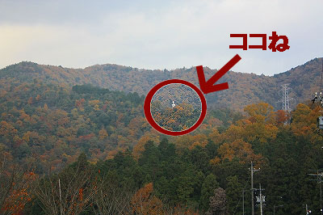
山道を車で上っていき、ヘアピンカーブを曲がると…
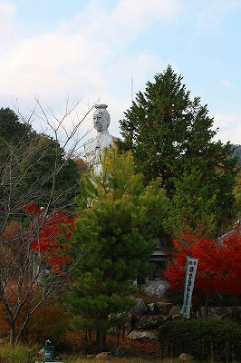
ハイ、出ました！
見事にケッタイな巨像であります。
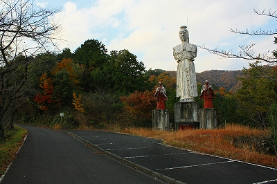
中央に白い人物…聖徳太子です。多分。
誰もいない山中にポツンと立つ聖徳太子。相当シュールな眺めである。
左右に赤い人物像を従えて威風堂々…と言いたいところだがかなり痛んでいる。
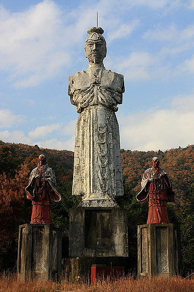
この太子像の存在を知ったのは随分前になる。
愛知県漂流という素晴らしきハイパーカルト誌（在庫がある今のうちに全号買うべし！特に2号の愛知県裏観光は傑作！）にこの太子像が掲載されていたのだ。
その記事を見て以来この不思議で不気味な太子像が気になって気になって仕方がなかったのだが、中々訪問する機会が訪れなかったのは辺鄙で行くのが面倒だったからだよ。
で、行ってみたら手がないじゃん！
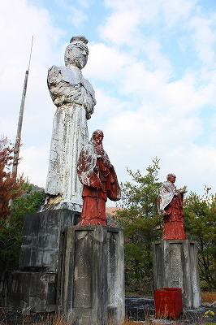 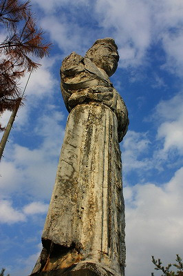
とはいえ腕が付け根からバサっと落ちてしまった様子はない。
足元にあったミニチュア太子像を見て納得。
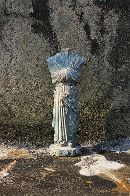
あ、腕が落ちたんじゃなくて袖の中に入ってるんですね。
このミニチュアくらい上手に作ってくれれば一目で分かるんですけど。
左右には真っ赤に燃え盛るお坊さん2人を従えている。
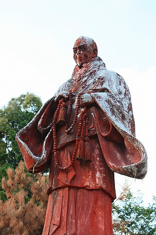 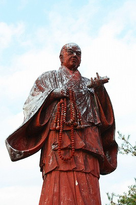
左は白バイ隊員みたいなマフラーが素敵な親鸞上人。
で、右は巻物がトレードマークの日蓮上人。
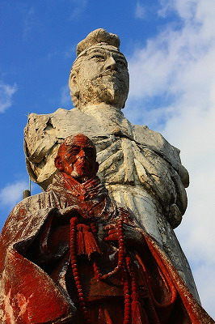
聖徳太子、親鸞、日蓮…何でこの3者が並んで立っているのかは謎だ。
謎といえばそもそもここに巨像が建っている理由すら謎。
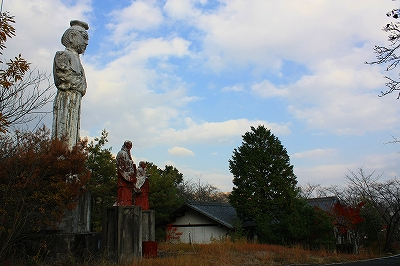 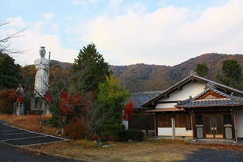
巨像の隣には平屋の民家風の建物がある。
この巨像を建てた宗教施設のものであろうことは想像に難くない。
何たって周りにはな〜んにもないんですから。
玄関脇には「西国一番那智觀世音菩薩分身」と刻まれた石碑が建っている。
裏に「昭和44年3月移転建之」とあるのでその時期に太子像も建てられた可能性が考えられるが断言出来る事は何一つない。
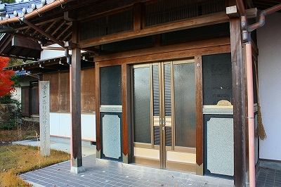
地元の人達に聞き込みをするもののコレといった有力情報はなし。
どちらかというとその話題を振ると皆さんチョット迷惑顔。そこんとこ突っ込んでくれるなオーラムンムンだし。グスン。
で、過去の住宅地図を調べてみた。
するとこの場所、実に不思議な変遷を経ている事が分かった。
今から約20年前、1990年の住宅地図を見るとこの場所は某企業の名義になっている。
そしてここから数百メートル下った場所に同名の企業の所有する建物が存在するのだ。
更にさかのぼり、1985年の地図を見ると、この太子像の隣の建物は青い鳥の館と表記されている。
そして数百メートル下った場所にある建物は金尾滝山荘となっていて、さらにその近くには金尾滝バンガロー村があり、その隣には大和天神という神社がある。
山中で周辺には何もない場所だけにこの企業（個人名も併記されていたがここでは伏せる）、聖徳太子像、青い鳥の館、そして大和天神という神社、この四者はなんらかの関係があるのではないかと考えられるのだが詳細は一切不明である。
にしても青い鳥の館というネーミングと巨大聖徳太子像の組み合わせも不自然だし…
謎が謎を呼びまくりなのである。
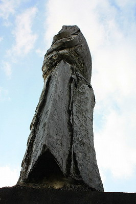
朽ちかけた巨像、近くから見てみるとコンクリ像ではなくFRP製のようだ。
巨像が荒廃したの成れの果ては基本放置、ということになろう。
淡路島の世界平和大観音はその巨躯が災いしてかなり深刻な問題となっているようだが、ここもそう長くなさそう。
今後の成り行きが懸念される。
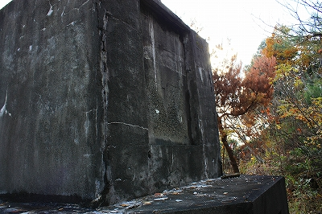 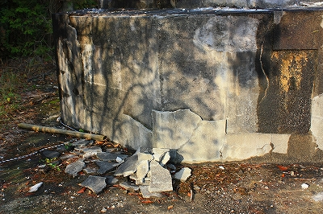
ご覧の通り台座のコンクリの表面も剥離している。
なお、台座の正面と裏に四角い跡があるが、そこにはめこまれていたであろうプレートはどこにも見当たらなかった。
意図的にどこかに持ち運ばれたのだろうが、数少ない手がかりがここでも途絶えてしまっている格好だ。
太子像の近くの草むらに巨大な棒状のモノが落ちていた。
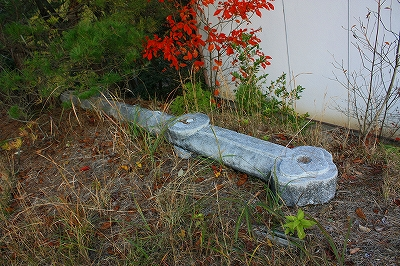
ああ、これは太子が手に持っている笏、あるいは腰につけている刀じゃないか。
大きすぎて落ちちゃったんですかねえ。
諸行無常、ですなあ。
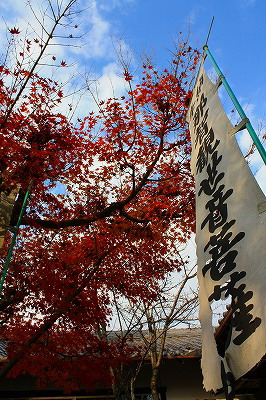
それにしても知らないで夜中にドライブしてていきなりこの太子サマが視界に飛び込んできたら、どうなるだろう。
顔怖いし。絶対チビるでしょう。
日本仏教の大功労者なんすけどね〜。
ああ、でも近頃、聖徳太子ってホントはいなかった、っつーのが定説みたいですね。厩戸皇子をモデルにして作り上げた創作人物だったとか。
とはいうもの民間信仰としての太子信仰はかなり広範に分布しているし、この巨像もひょっとしたら太子信仰と関係しているのかもしれない。
…なんだか今回仮説だらけですいやせんね。
2008.11.
珍寺大道場 HOME